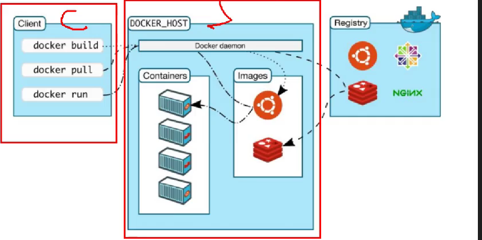
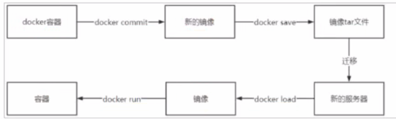

Docker 笔记
目录
- 一、Docker 概述与架构
- 二、安装与配置
- 三、核心命令速查
- 四、Docker 数据管理
- 五、Docker 网络
- 六、Dockerfile 与镜像构建
- 七、Docker Compose
- 八、常用容器部署速查
- 九、常见问题与排查
一、Docker 概述与架构
1.1 什么是 Docker
Docker 是一个开源的容器化平台，用于将应用及其依赖打包到轻量、可移植的容器中。
核心特点：
- 轻量级：容器共享宿主机内核，启动速度快、资源占用少
- 可移植：一次构建，随处运行（开发、测试、生产环境一致）
- 隔离性：每个容器独立运行，互不干扰
1.2 Docker vs 传统虚拟机
| 对比项 | Docker 容器 | 传统虚拟机 |
|---|---|---|
| 启动时间 | 秒级 | 分钟级 |
| 资源占用 | MB 级 | GB 级 |
| 性能 | 接近原生 | 有损耗 |
| 隔离级别 | 进程级 | 操作系统级 |
| 操作系统 | 共享宿主机内核 | 独立内核 |
1.3 Docker 架构

核心组件：
| 组件 | 说明 |
|---|---|
| 镜像（Image） | 只读模板，包含运行应用所需的所有内容（代码、运行时、库、配置） |
| 容器（Container） | 镜像的运行实例，是一个隔离的进程 |
| 仓库（Registry） | 存储和分发镜像的地方，如 Docker Hub、私有仓库 |
| Docker Daemon | 守护进程，负责构建、运行、分发容器 |
| Docker Client | 客户端，通过 CLI 或 API 与 Daemon 交互 |
镜像与容器的关系：类比面向对象编程，镜像 = 类，容器 = 对象实例。
二、安装与配置
2.1 Linux 环境（CentOS）
2.1.1 前置准备
安装 GCC 环境：
安装 Docker 依赖：
2.1.2 配置镜像源
官方源（可能有问题）：
清华源（国内推荐）：
sed -i 's+https://download.docker.com+https://mirrors.tuna.tsinghua.edu.cn/docker-ce+' /etc/yum.repos.d/docker-ce.repo
2.1.3 安装 Docker
分步安装：
一键安装（阿里云镜像）：
curl -fsSL https://github.com/tech-shrimp/docker_installer/releases/download/latest/linux.sh | bash -s docker --mirror Aliyun
2.1.4 卸载 Docker
yum remove docker \
docker-client \
docker-client-latest \
docker-common \
docker-latest \
docker-latest-logrotate \
docker-logrotate \
docker-engine
2.1.5 配置镜像加速
创建配置目录：
编辑配置文件 /etc/docker/daemon.json：
{
"registry-mirrors": [
"https://docker.m.daocloud.io",
"https://docker.1panel.live",
"https://docker.xuanyuan.me",
"https://docker.mirrors.ustc.edu.cn",
"https://registry.dockermirror.com",
"https://hub-mirror.c.163.com"
]
}
注意：JSON 配置最后不要有逗号！阿里云镜像仓库已不对外开放，仅阿里云服务器可用。
腾讯云服务器额外配置：
{
"registry-mirrors": [
"https://docker.m.daocloud.io",
"https://docker.1panel.live",
"https://docker.xuanyuan.me",
"https://docker.mirrors.ustc.edu.cn",
"https://registry.dockermirror.com",
"https://hub-mirror.c.163.com",
"https://mirror.ccs.tencentyun.com"
]
}
重载配置并重启：
2.1.6 配置远程连接（可选）
用于 IDEA/其他工具远程部署镜像到 Docker。
修改 /lib/systemd/system/docker.service：
# 原配置
ExecStart=/usr/bin/dockerd -H fd:// --containerd=/run/containerd/containerd.sock
# 改为（添加 TCP 监听）
ExecStart=/usr/bin/dockerd -H tcp://0.0.0.0:2375 -H fd:// --containerd=/run/containerd/containerd.sock
注意：生产环境建议限制 IP 或使用 TLS 加密，2375 端口无认证有安全风险。
重启服务：
2.2 Windows 环境
"C:\Docker Desktop Installer.exe" install `
--installation-dir="D:\02_DevStack\06_DevTools\Docker" `
--backend=hyper-v `
--hyper-v-default-data-root="E:\08_Docker_Data\hyper-v" `
--windows-containers-default-data-root="E:\08_Docker_Data\images"
多行命令无法正常执行，改成单行即可。
"C:\Docker Desktop Installer.exe" install --installation-dir="D:\02_DevStack\06_DevTools\Docker" --backend=hyper-v --hyper-v-default-data-root="E:\08_Docker_Data\hyper-v" --windows-containers-default-data-root="E:\08_Docker_Data\images"
靠了，不让我安装到其他地方，真没招了，还是不用命令行了。把镜像位置改一下就行。
| 参数名 | 设定值 | 作用 |
|---|---|---|
--installation-dir |
D:\02_DevStack\06_DevTools\Docker |
指定安装位置 |
--backend |
hyper-v |
强制使用 Hyper-V 后端，跳过 WSL2。 |
--hyper-v-default-data-root |
E:\08_Docker_Data\hyper-v |
存放 Docker 运行所需的虚拟机硬盘文件（.vhdx）。 |
--windows-containers-default-data-root |
E:\08_Docker_Data\images |
存放 Pull 下来的各种镜像数据。 |
三、核心命令速查
镜像由多层组成，层是公用的，下载其他镜像时可复用已下载的层。
3.1 镜像命令
| 命令 | 说明 | 示例 |
|---|---|---|
docker search |
搜索镜像 | docker search nginx |
docker pull |
拉取镜像 | docker pull nginx:1.24 |
docker images |
查看本地镜像 | docker images -a |
docker rmi |
删除镜像 | docker rmi -f nginx:1.24 |
docker tag |
重命名镜像 | docker tag nginx:1.24 mynginx:v1 |
docker load |
从 tar 加载镜像 | docker load -i nginx.tar |
docker save |
导出镜像为 tar | docker save -o nginx.tar nginx:1.24 |
常用组合命令：
# 删除所有镜像
docker rmi -f $(docker images -aq)
# 查看镜像详细信息
docker inspect nginx:1.24
# 查看镜像历史（各层信息）
docker history nginx:1.24
3.2 容器命令
3.2.1 创建容器参数说明
| 参数 | 说明 |
|---|---|
-i |
以交互模式运行，保持 STDIN 打开 |
-t |
分配伪终端，通常与 -i 合用为 -it |
-d |
后台运行（守护式容器） |
--name |
指定容器名称 |
-p |
端口映射，格式：宿主机端口:容器端口 |
-P |
随机端口映射 |
-v |
挂载目录，格式：宿主机路径:容器路径 |
-e |
设置环境变量 |
--restart |
重启策略：always、on-failure、no |
--network |
指定网络 |
--privileged |
给容器扩展权限 |
3.2.2 容器生命周期命令
| 命令 | 说明 | 示例 |
|---|---|---|
docker run |
创建并启动容器 | docker run -d --name web nginx |
docker start |
启动已停止的容器 | docker start web |
docker stop |
停止容器 | docker stop web |
docker restart |
重启容器 | docker restart web |
docker kill |
强制停止容器 | docker kill web |
docker rm |
删除容器 | docker rm web |
docker pause |
暂停容器 | docker pause web |
docker unpause |
恢复容器 | docker unpause web |
3.2.3 容器操作命令
# 查看运行中的容器
docker ps
# 查看所有容器（包括已停止）
docker ps -a
# 仅显示容器 ID
docker ps -aq
# 进入容器（推荐 exec，退出后容器不停止）
docker exec -it web /bin/bash
# 查看容器日志
docker logs -f web # -f 实时跟踪
# 查看容器详细信息
docker inspect web
# 查看容器内进程
docker top web
# 查看容器资源占用
docker stats web
# 容器与宿主机文件互传
docker cp /host/path web:/container/path # 宿主机 → 容器
docker cp web:/container/path /host/path # 容器 → 宿主机
# 修改容器配置
docker update web --restart always
# 导出容器为 tar（不含镜像信息）
docker export web > web.tar
# 从 tar 导入为镜像
docker import web.tar myimage:v1
3.2.4 交互式 vs 守护式容器
| 类型 | 特点 | 创建命令 | 进入方式 |
|---|---|---|---|
| 交互式 | 有终端交互，exit 后容器停止 | docker run -it --name c1 centos /bin/bash |
直接进入 |
| 守护式 | 后台运行，exit 后容器继续运行 | docker run -d --name c2 nginx |
docker exec -it c2 /bin/bash |
3.3 数据卷命令
| 命令 | 说明 | 示例 |
|---|---|---|
docker volume create |
创建数据卷 | docker volume create mydata |
docker volume ls |
查看所有数据卷 | docker volume ls |
docker volume inspect |
查看数据卷详情 | docker volume inspect mydata |
docker volume rm |
删除数据卷 | docker volume rm mydata |
docker volume prune |
删除未使用的数据卷 | docker volume prune |
3.4 网络命令
| 命令 | 说明 | 示例 |
|---|---|---|
docker network create |
创建网络 | docker network create mynet |
docker network ls |
查看网络列表 | docker network ls |
docker network inspect |
查看网络详情 | docker network inspect mynet |
docker network rm |
删除网络 | docker network rm mynet |
docker network connect |
连接容器到网络 | docker network connect mynet web |
docker network disconnect |
断开容器网络 | docker network disconnect mynet web |
3.5 日志与排查命令
# 查看容器日志
docker logs container_name
# 实时跟踪日志（类似 tail -f）
docker logs -f container_name
# 查看最近 100 行日志
docker logs --tail 100 container_name
# 查看容器内运行的进程
docker top container_name
# 实时查看容器资源占用
docker stats
# 查看容器详细信息（IP、挂载、配置等）
docker inspect container_name
# 查看 Docker 系统信息
docker info
# 查看 Docker 版本
docker version
四、Docker 数据管理
4.1 数据卷（Volume）
概念：Docker 管理的持久化存储，数据存于 /var/lib/docker/volumes/，与容器生命周期解耦。
特点：
- Docker 自动管理，删除容器时数据卷不会自动删除
- 多个容器可共享同一数据卷
- 支持远程存储、云存储
挂载方式：
注意事项：
- 数据卷未提前创建时，会自动创建
- 数据卷不为空时，内容会覆盖容器目录
- 数据卷为空时，容器目录内容会复制到数据卷
4.2 目录挂载（Bind Mount）
概念：将宿主机特定目录直接挂载到容器，开发者可控路径。
注意事项：
- 宿主机目录前有
/（绝对路径） - 目录不存在会自动创建
- 宿主机目录为空时，会清空容器目录内容（危险！）
权限问题：
如果出现 Permission denied，添加 --privileged=true：
4.3 数据卷 vs 目录挂载对比
| 对比项 | 数据卷（Volume） | 目录挂载（Bind Mount） |
|---|---|---|
| 存储位置 | Docker 管理 /var/lib/docker/volumes/ |
用户指定任意路径 |
| Docker 管理 | 是 | 否 |
| 跨主机移植 | 容易 | 困难 |
| 性能 | 好 | 好 |
| 适用场景 | 生产环境、持久化数据 | 开发环境、配置文件 |
4.4 容器数据备份与迁移

步骤：
# 1. 将容器提交为镜像
docker commit redis01 myredis:v1
# 2. 导出镜像为 tar 包
docker save -o ./myredis.tar myredis:v1
# 3. 在目标机器加载镜像
docker load -i ./myredis.tar
# 4. 使用镜像启动新容器
docker run -d --name redis02 myredis:v1
五、Docker 网络
5.1 网络类型
| 类型 | 说明 | 适用场景 |
|---|---|---|
| bridge | 默认网络，容器间可通过 IP 互通 | 单机多容器通信 |
| host | 容器直接使用宿主机网络，无隔离 | 性能要求高、无需隔离 |
| none | 无网络，完全隔离 | 安全要求高的容器 |
| 自定义网络 | 用户创建，容器可通过名称互访 | 微服务架构、服务发现 |
5.2 创建自定义网络
# 创建网络
docker network create mynet
# 指定网络启动容器
docker run -d --name web --network mynet nginx
docker run -d --name api --network mynet python-app
# 同一网络内的容器可通过名称互访
# 在 web 容器内可直接访问 http://api:8000
5.3 网络模式对比
# bridge 模式（默认）
docker run -d --name web nginx
# 容器有独立 IP，需通过 IP 或端口映射访问
# host 模式
docker run -d --name web --network host nginx
# 容器直接用宿主机端口，无需 -p 映射
# none 模式
docker run -d --name web --network none nginx
# 容器无网络
六、Dockerfile 与镜像构建
6.1 Dockerfile 概念
Dockerfile 是一个文本文件，包含一系列指令，用于自动构建 Docker 镜像。
构建流程：Docker 按顺序执行每条指令，每条指令生成一个镜像层（Layer）。
6.2 常用指令详解
| 指令 | 作用 | 示例 |
|---|---|---|
FROM |
指定基础镜像（必须为第一条） | FROM centos:7 |
LABEL |
添加元数据（如维护者） | LABEL maintainer="admin@example.com" |
RUN |
构建时执行命令，生成新层 | RUN yum install -y vim |
COPY |
复制文件到镜像（不解压） | COPY app.jar /app/ |
ADD |
复制文件并自动解压 tar | ADD jdk.tar.gz /usr/local/ |
ENV |
设置环境变量 | ENV JAVA_HOME=/usr/local/jdk |
WORKDIR |
设置工作目录 | WORKDIR /app |
EXPOSE |
声明端口（仅文档作用） | EXPOSE 8080 |
CMD |
容器启动默认命令（可覆盖） | CMD ["java", "-jar", "app.jar"] |
ENTRYPOINT |
容器主命令（不易覆盖） | ENTRYPOINT ["java"] |
VOLUME |
声明数据卷挂载点 | VOLUME /data |
USER |
指定运行用户 | USER appuser |
ARG |
构建时变量（不持久化） | ARG VERSION=1.0 |
6.3 关键指令对比
COPY vs ADD
| 对比项 | COPY | ADD |
|---|---|---|
| 功能 | 仅复制文件 | 复制 + 自动解压 tar + URL下载 |
| 推荐 | ✅ 推荐（语义明确） | 仅在需要解压时使用 |
CMD vs ENTRYPOINT
| 对比项 | CMD | ENTRYPOINT |
|---|---|---|
| 用途 | 默认命令，可被 docker run 参数覆盖 |
主命令，不易覆盖 |
| 覆盖方式 | docker run image new_cmd 整体替换 |
docker run image args 作为追加参数 |
| 组合使用 | 作为 ENTRYPOINT 的默认参数 | 固定主命令 |
组合示例：
ENTRYPOINT ["java", "-jar"]
CMD ["app.jar"]
# 默认执行：java -jar app.jar
# docker run myimage other.jar → 执行：java -jar other.jar
6.4 Dockerfile 最佳实践
1. 减少镜像层数：
# 不推荐：多层
RUN yum install -y vim
RUN yum install -y net-tools
RUN yum clean all
# 推荐：合并为一层
RUN yum install -y vim net-tools && yum clean all
2. 使用多阶段构建：
# 第一阶段：编译
FROM maven:3.8 AS builder
WORKDIR /app
COPY pom.xml .
RUN mvn dependency:go-offline
COPY src ./src
RUN mvn package
# 第二阶段：运行（仅包含编译产物）
FROM tomcat:9
COPY --from=builder /app/target/*.war /usr/local/tomcat/webapps/
3. 合理利用缓存：
- 把不常变化的指令放前面（如依赖安装）
- 把常变化的指令放后面（如 COPY 源码）
6.5 构建 JDK 镜像示例
# 基础镜像
FROM centos:7
# 维护者信息
LABEL maintainer="admin@example.com"
# 创建目录并添加 JDK（自动解压）
RUN mkdir -p /usr/local/java
ADD jdk-17_linux-x64_bin.tar.gz /usr/local/java/
# 设置环境变量
ENV JAVA_HOME=/usr/local/java/jdk-17.0.7
ENV PATH=$PATH:$JAVA_HOME/bin
# 验证安装
RUN java -version
构建命令：
参数说明：
-t：指定镜像名称和标签.：构建上下文路径（Dockerfile 所在目录）
七、Docker Compose
7.1 概念
Docker Compose 是 Docker 官方的容器编排工具，用于批量管理多个容器。
核心功能：
- 通过 YAML 文件定义多容器应用
- 一键启动/停止所有容器
- 管理容器间的依赖、网络、数据卷
7.2 常用命令
| 命令 | 说明 |
|---|---|
docker compose up -d |
创建并启动所有容器 |
docker compose down |
停止并删除所有容器、网络 |
docker compose start |
启动已存在的容器 |
docker compose stop |
停止容器 |
docker compose restart |
重启容器 |
docker compose ps |
查看容器状态 |
docker compose logs |
查看日志 |
docker compose config |
验证配置文件 |
指定配置文件：
7.3 compose 文件结构
services:
redis:
image: redis:7.0.10
container_name: redis001
ports:
- "6399:6379"
volumes:
- redis-data:/data
restart: always
networks:
- mynet
mysql:
container_name: mysql001
image: mysql:8.0.30
ports:
- "3399:3306"
volumes:
- mysql_data:/var/lib/mysql
- mysql_conf:/etc/mysql
environment:
MYSQL_ROOT_PASSWORD: 1234
restart: always
networks:
- mynet
app:
container_name: app001
image: myapp:v1.0
ports:
- "8099:8080"
depends_on: # 依赖关系
- redis
- mysql
networks:
- mynet
volumes:
redis-data: {}
mysql_data: {}
mysql_conf: {}
networks:
mynet:
driver: bridge
7.4 服务配置项说明
| 配置项 | 说明 |
|---|---|
image |
使用已有镜像 |
build |
从 Dockerfile 构建 |
container_name |
容器名称 |
ports |
端口映射 |
volumes |
数据卷挂载 |
environment |
环境变量 |
restart |
重启策略：always、on-failure、no |
depends_on |
依赖的服务（启动顺序） |
networks |
加入的网络 |
command |
覆盖默认启动命令 |
八、常用容器部署速查
8.1 MySQL
docker run -d --name mysql \
-p 3306:3306 \
-v mysql_data:/var/lib/mysql \
-v mysql_conf:/etc/mysql \
-e MYSQL_ROOT_PASSWORD=root123 \
mysql:8.0.30
# 进入容器（设置编码避免中文乱码）
docker exec -it -e LANG=C.UTF-8 mysql bash
8.2 Redis
# 创建配置目录
mkdir -p /mydata/redis/conf/mydata/redis/data
touch /mydata/redis/conf/redis.conf
# 启动 Redis
docker run -d --name redis \
-p 6379:6379 \
-v /mydata/redis/data:/data \
-v /mydata/redis/conf/redis.conf:/etc/redis/redis.conf \
redis:7.0.15 \
redis-server /etc/redis/redis.conf
# 测试连接
docker exec -it redis redis-cli
8.3 RabbitMQ
docker run -d --name rabbitmq \
-p 5672:5672 \
-p 15672:15672 \
-v rabbitmq-plugin:/plugins \
-e RABBITMQ_DEFAULT_USER=root \
-e RABBITMQ_DEFAULT_PASS=root123 \
rabbitmq:3.12.0-management
# 启用延迟消息插件
rabbitmq-plugins enable rabbitmq_delayed_message_exchange
端口说明：5672 为客户端连接端口，15672 为管理界面端口。
8.4 Nacos
docker pull nacos/nacos-server:v2.1.1
docker run -d --name nacos \
-e MODE=standalone \
-p 8848:8848 \
-p 9848:9848 \
nacos/nacos-server:v2.1.1
Nacos 2.x 新增 gRPC 端口 9848，需同时映射。
8.5 MinIO
docker run -d --name minio \
-p 9000:9000 \
-p 9001:9001 \
-e "MINIO_ROOT_USER=minioadmin" \
-e "MINIO_ROOT_PASSWORD=minioadmin" \
-v minio-data:/data \
--restart=always \
minio/minio \
server /data --console-address ":9001"
端口说明：9000 为 API 端口，9001 为控制台端口。
8.6 Nginx
docker run -d --name nginx \
-p 80:80 \
-v nginx_conf:/etc/nginx \
-v nginx_html:/usr/share/nginx/html \
-v nginx_logs:/var/log/nginx \
nginx
8.7 Elasticsearch
# 创建目录
mkdir -p /opt/elasticsearch/{config,plugins,data}
chmod -R 777 /opt/elasticsearch
# 创建配置文件
cat <<EOF > /opt/elasticsearch/config/elasticsearch.yml
xpack.security.enabled: true
xpack.license.self_generated.type: basic
xpack.security.transport.ssl.enabled: false
xpack.security.enrollment.enabled: true
http.host: 0.0.0.0
EOF
# 启动
docker network create elastic
docker run -d --name elasticsearch \
-p 9200:9200 -p 9300:9300 \
--net elastic \
--restart=always \
-e "discovery.type=single-node" \
-e ES_JAVA_OPTS="-Xms512m -Xmx512m" \
-v /opt/elasticsearch/config/elasticsearch.yml:/usr/share/elasticsearch/config/elasticsearch.yml \
-v /opt/elasticsearch/data:/usr/share/elasticsearch/data \
-v /opt/elasticsearch/plugins:/usr/share/elasticsearch/plugins \
elasticsearch:8.5.0
# 重置密码（等待 ES 启动完成后执行）
docker exec -it elasticsearch bin/elasticsearch-reset-password -u elastic -i
docker exec -it elasticsearch bin/elasticsearch-reset-password -u kibana_system -i
8.8 MongoDB
docker pull mongo:7.0.0
mkdir -p /opt/mongo/data/db
docker run -d --name mongo \
--restart=always \
-p 27017:27017 \
-v /opt/mongo/data/db:/data/db \
mongo:7.0.0
# 连接
docker exec -it mongo mongosh
8.9 Portainer（Docker 管理界面）
docker run -d --name portainer \
-p 19000:9000 \
-v /var/run/docker.sock:/var/run/docker.sock \
-v /app/portainer_data:/data \
--restart always \
--privileged=true \
portainer/portainer-ce:latest
# 访问 http://<服务器IP>:19000
8.10 Sentinel
docker pull bladex/sentinel-dashboard:latest
docker run -d --name sentinel-dashboard \
--restart=always \
-p 8858:8858 \
bladex/sentinel-dashboard:latest
8.11 Zipkin
docker pull openzipkin/zipkin
docker run -d --name zipkin \
--restart=always \
-p 9411:9411 \
openzipkin/zipkin
九、常见问题与排查
9.1 容器启动失败
常见原因：
- 端口冲突：宿主机端口已被占用
- 镜像不存在：检查镜像是否正确拉取
- 资源不足：内存、磁盘空间不足
- 配置错误：环境变量、挂载路径等配置问题
9.2 镜像拉取失败
原因：国内访问 Docker Hub 速度慢或被限制
解决方案：
- 配置国内镜像加速源
- 使用代理或 VPN
- 从本地 tar 文件加载：
docker load -i xxx.tar
9.3 权限问题
现象：挂载目录后出现 Permission denied
解决：
# 方案一：添加特权模式
docker run --privileged=true -v /host:/container image
# 方案二：在 Dockerfile 中设置用户
USER root
9.4 容器时间与宿主机不一致
原因：容器默认使用 UTC 时区
解决：
# 挂载宿主机时区文件
docker run -v /etc/localtime:/etc/localtime:ro image
# 或设置环境变量
docker run -e TZ=Asia/Shanghai image
9.5 Docker 占用磁盘过大
# 查看 Docker 磁盘占用
docker system df
# 清理未使用的资源
docker system prune
# 仅清理镜像
docker image prune
# 仅清理容器
docker container prune
# 仅清理数据卷
docker volume prune
9.6 进入容器执行命令
# 常见容器 shell 路径
docker exec -it container /bin/bash # CentOS/Ubuntu
docker exec -it container /bin/sh # Alpine
docker exec -it container sh # 精简镜像可能只有 sh
面试高频考点
1. Docker 核心概念
镜像 vs 容器：镜像是静态模板（类似类），容器是运行实例（类似对象）。
Docker vs 虚拟机：容器共享宿主机内核，启动快、资源占用少；虚拟机独立内核，隔离性强。
2. Dockerfile 指令
CMD vs ENTRYPOINT：CMD 可被覆盖，ENTRYPOINT 作为主命令不易覆盖，常组合使用。
COPY vs ADD：COPY 仅复制，ADD 会自动解压 tar 包。
3. 数据持久化
数据卷 vs 目录挂载：数据卷 Docker 管理、易于移植；目录挂载用户管理、适合开发环境。
4. 网络
自定义网络优势：容器可通过名称互访，适合微服务架构。
5. 镜像优化
减少层数：合并 RUN 命令，减少镜像层。
多阶段构建：编译与运行分离，减小最终镜像体积。